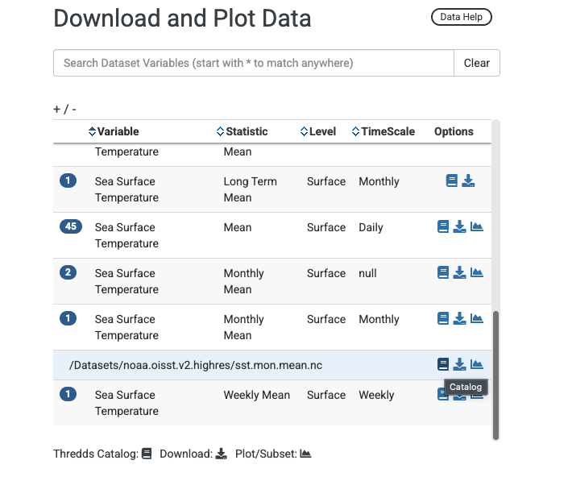
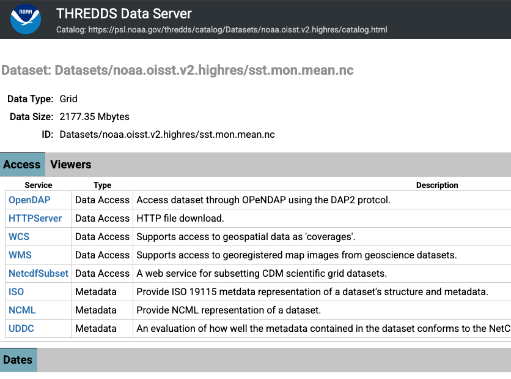
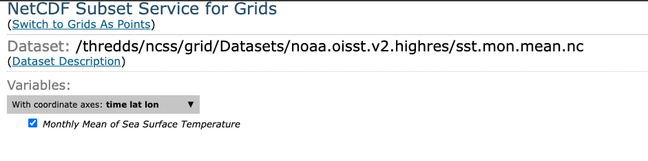
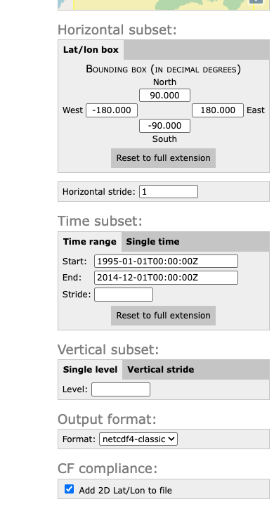

We need to download observed data of sea-surface temperature for our next step of bias correction, which is explained further in the next chapter.
Today, we will use the OISST V2.1 dataset to bias correct our ESM outputs of sea-surface temperature.
The NOAA 1/4° Daily Optimum Interpolation Sea Surface Temperature (OISST) is a long term Climate Data Record that incorporates observations from different platforms (satellites, ships, buoys and Argo floats) into a regular global grid. The dataset is interpolated to fill gaps on the grid and create a spatially complete map of sea surface temperature. Satellite and ship observations are referenced to buoys to compensate for platform differences and sensor biases.
Oceanography terminology: ‘observations’
Whether data are referred to as observations depends on who you to talk to. For the purposes of our workshop, and as marine ecologists, we refer to OISST as our ‘observed’ data set, because it represents ‘real-life’ SST. However, sea-going physical oceanographers might not refer to OISST as observations, because the product represents a series of observations obtained from different platforms (i.e., ARGO, moorings, satellites, ship-borne sensors etc.) that have been ‘modeled’ or ‘interpolated’ into a gridded, cloud-free product. Technically, OISST represents a modeled product based on observations. Rather, they would refer to observations as the raw, unprocessed data coming from sensors themselves. Just something to keep in mind when talking to people from different disciplines.
4.1 Download OISST
Today, we’re going to download monthly means of SST from 1995-2014 (i.e., 20 years). These are our observations. We’ll get into why we chose this time period in the next Chapter. Our monthly means are provided as a single .nc file from the NOAA Physical Sciences Laboratory thredds website.
Under ’Download and Plot Data’, there are a bunch of files across different temporal resolutions and summary statistics. Find the row that corresponds to Variable: Sea surface temperature, Statistic: Monthly Mean, Level: Surface, and Timescale: Monthly. Click the blue #1 icon (i.e., there is one file associated with this row). A drop down file appears called /Datasets/noaa.oisst.v2.highres/sst.mon.mean.nc. Click the blue book icon next to this, which links to the thredds catalog hosting the file. See below for what this looks like.

Clicking the book icon will result in seeing a variety of options for downloading the file. You can download the file directly within your browser, by selecting the HTTPServer option. However, the file is 2177 MB (i.e., >2GB), because it contains the monthly means for a global grid for each month from 1991 to 2025! That’s a lot of data to download!
Perhaps a more space-savvy option is to select the NetCDFsubset option. This allows us to select the time period and spatial bounding box we want, thereby reducing the file size.

Once we select NetcdfSubset, we now select the specific fields we want. Below, I’ve:
Selected the variable check box (i.e., Monthly Mean of Sea Surface Temperature)
Changed the time period to Start: 1995-01-01 and End: 2014-12-01
Specified the Output format as netCDF4-classic
I could reduce the file size further by entering in the spatial bounding box for California (using latitudinal and longitudinal coordinates), however I’m using these files for other purposes, so I’ve kept it as a global grid.


You’ll see at the bottom of the page it produces a ‘NCSS request URL’. When you click ‘Submit’, your browser will download the amended file.
Downloading this file took about 10 seconds, and the file is only ~450 MB. Much better!
4.2 Preprocess OISST
As with the ESMs, we need to preprocess our observations, by cropping and remapping the OISST fields to the same resolution and extent off the California coast.